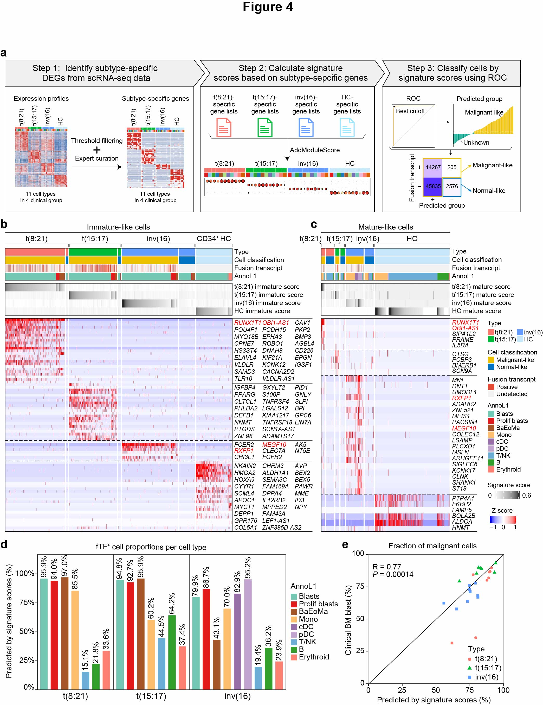

4 Figure 4
 Fig.4 | Gene-signature-based classification of malignant-like cells in AML subtypes.
a, Schematics of the bioinformatics pipeline used to identify t(8;21)/t(15;17)/inv(16) AML subtype-specific gene signatures and classify malignant- or normal-like cells in leukemia BMs. Primitive and mature hematopoietic cell types from publicly available healthy scRNA-seq data were used as healthy controls (HC). b, Heatmap displaying the expression of t(8;21)/t(15;17)/inv(16) AML subtype-specific genes across 229,305 single cells, ordered by level 1 cell annotations for primitive cell types. c, Heatmap displaying the expression of t(8;21)/t(15;17)/inv(16) AML subtype-specific genes across 122,289 single cells, ordered by level 1 cell annotations for mature-like cell types. d, Bar charts showing the percentage of cells classified as malignant-like in t(8;21) (left panel), t(15;17) (middle panel), and inv(16) (right panel) AML subtypes. e, Scatterplot comparing clinical blast counts (y-axis) to the fraction of cells classified as malignant-like by gene-signature-based classification (x-axis). Each point corresponds to a specific AML sample.
4.1 (b) Heatmap of primitive cell types
res_pred <- read_rds((paste0(in_dir, "0.6.fus_pred/Table1.res_pred.351594.rds"))) %>%
rownames_to_column("ID") %>%
left_join(., read_rds((paste0(in_dir, "Table0.scAML.merge.raw.azimuth.sub_meta.data.rds"))) %>%
rownames_to_column("ID") %>% dplyr::select(ID, annoL1)) %>%
column_to_rownames("ID")
res_final <- read_rds((paste0(in_dir, "0.6.fus_pred/Table2.res_final.347846.rds")))
scAML.prog.anno <- read_rds(paste0(in_dir, "Table1.3.scAML.prog_harmony.anno.rds"))
scAML.O.anno <- read_rds(paste0(in_dir, "Table1.3.scAML.O_harmony.anno.rds"))
my_idx1 <- c("FAB", "SS.final_fus_group", "fus_group", "annoL1")
my_idx2 <- c("M2_score", "M3_score", "M4_score", "HC_score")
my_s <- c("M2AE_Malignant", "M2AE_Unclear", "M3PR_Malignant", "M3PR_Unclear",
"M4CM_Malignant", "M4CM_Unclear", "HC_CD34_Unclear", "HC_BMMC_Unclear")
anno_color <- c("#73C8B4", "#E31A1C", "#A65628", "#FDBF6F", "#9970AB", "#C2A5CF", "#6BAED6", "#33A02C", "#FB8072")
anno_name <- c("Progs", "Progs_Prolif", "Progs_BaEoMa", "Mono", "cDC", "pDC", "T.NK", "B", "Erythroid")
names(anno_color) <- anno_name
my_colors <- c(c("M2AE" = "#F8766D", "M3PR" = "#00BA38", "M4CM" = "#619CFF", "HC_CD34" = "#C7E8FA", "HC_BMMC" = "#C7E8FA"),
c("Positive" = "#E64B35", "UnDetected" = "#F2F2F2"),
c("Malignant" = "#EFC000", "Unclear" = "#0073C2"),
anno_color)
my_clin <- res_pred %>%
rownames_to_column("ID") %>%
filter(ID %in% res_final$ID) %>%
mutate(fus_group = ifelse(is.na(fus_group), "UnDetected", fus_group)) %>%
unite("my_split", c(FAB, SS.final_fus_group), sep = "_", remove = F) %>%
mutate(my_split = factor(my_split, levels = my_s)) %>%
group_by(FAB) %>%
arrange(
case_when(
FAB == "M2AE" ~ desc(M2_score),
FAB == "M3PR" ~ desc(M3_score),
FAB == "M4CM" ~ desc(M4_score),
FAB == "HC_CD34" ~ desc(HC_score),
FAB == "HC_BMMC" ~ desc(HC_score)
)
) %>%
arrange(my_split, annoL1) %>% column_to_rownames("ID")
idx.cells1 <- intersect(rownames(my_clin), colnames(scAML.prog.anno))
idx.cells2 <- intersect(rownames(my_clin), colnames(scAML.O.anno))
my_clin.prog <- my_clin[idx.cells1, ]
my_clin.O <- my_clin[idx.cells2, ]
#########
my_idx82 <- c("RUNX1T1", "OBI1-AS1", "PCDH15", "CAV1", "POU4F1", "CACNA2D2", "MYO18B", "BMP3", "CPNE7", "EPHA3", "HS3ST4", "ROBO1", "AGBL4", "DNAH8", "ELAVL4", "EPGN", "VLDLR", "KIF21A", "PKP2", "CD226", "SAMD3", "IGSF1", "KCNK12", "VLDLR-AS1", "TLR10",
"PID1", "NNMT", "PPARG", "LIN7A", "IGFBP4", "LGALS12", "GXYLT2", "PTGDS", "CLTCL1", "GNLY", "PHLDA2", "ADAMTS17", "TNFRSF4", "GPC6", "SLPI", "DEFB1", "S100P", "ZNF98", "BPI", "KIAA1217", "SCN1A-AS1", "TNFRSF18",
"FCER2", "AK5", "RXFP1", "NT5E", "CHI3L1", "FGFR2", "MEGF10", "CLEC7A",
"BEX5", "NKAIN2", "AVP", "CHRM3", "BEX2", "ALDH1A1", "HMGA2", "HOXA9", "MME", "SEMA3C", "PAWR", "FAM169A", "CYYR1", "DPPA4", "SCML4", "IL12RB2", "APOC1", "ZNF385D-AS2", "MYCT1", "NPY", "DEPP1", "MPPED2", "GPR176", "LEF1-AS1", "ID3", "FAM43A", "COL5A1")
my_idx34 <- c("RUNX1T1", "OBI1-AS1", "SIPA1L2", "PRAME", "IL5RA",
"CTSG", "PCBP3", "BMERB1", "SCN9A",
"MN1", "DNTT", "UMODL1", "RXFP1", "ADARB2", "ZNF521", "MEIS1", "PACSIN1", "MEGF10", "COLEC12", "LSAMP", "PLCXD1", "MSLN", "ARHGEF11", "SIGLEC6", "KCNK17", "CLNK", "SHANK1", "ST18",
"PTP4A1", "FKBP2", "LAMP5", "BOLA2B", "ALDOA", "HNMT")
my_exp.prog <- data.frame(scAML.prog.anno@assays$RNA@data[my_idx82, idx.cells1], check.names = F)
my_exp.O <- data.frame(scAML.O.anno@assays$RNA@data[my_idx34, idx.cells2], check.names = F)
pdf(paste0(out_dir, "Fig4b.pdf"), width = 10, height = 7)
ht1_a <- Heatmap(t(my_clin.prog[, my_idx1]), name = "group",
height = unit(1.5, "cm"),
column_split = my_clin.prog$my_split, column_title_rot = 90,
use_raster = T, raster_quality = 5,
row_split = 1:4, row_gap = unit(1, "pt"),
col = my_colors,
cluster_columns = F, cluster_rows = F,
show_column_names = F,
row_names_gp = gpar(fontsize = 8)
)
ht2_a <- Heatmap(t(my_clin.prog[, my_idx2]), name = "sig.score",
height = unit(1.5, "cm"),
# column_split = my_clin.prog$my_split, column_title_rot = 90,
use_raster = T, raster_quality = 5,
col = circlize::colorRamp2(c(-0.1, 0.6), c("#FFFFFF", "#262626"), space = "RGB"),
cluster_columns = F, cluster_rows = F,
show_column_names = F,
row_names_gp = gpar(fontsize = 8)
)
ht3_a <- Heatmap(t(scale(t(my_exp.prog))), name = "Z-score",
height = unit(10, "cm"),
# column_split = my_clin.prog$my_split, column_title_rot = 90,
use_raster = T, raster_quality = 5,
col = circlize::colorRamp2(c(-1, 0, 1), c("#0000FF", "#FFFFFF", "#FF0000"), space = "RGB"),
cluster_columns = F, cluster_rows = F,
show_column_names = F,
row_names_gp = gpar(fontsize = 3)
)
ht_list_a = ht1_a %v% ht2_a %v% ht3_a
draw(ht_list_a)
dev.off()4.2 (c) Heatmap of mature-like cell types
pdf(paste0(out_dir, "Fig4c.pdf"), width = 7, height = 7)
ht1_b <- Heatmap(t(my_clin.O[, my_idx1]), name = "group",
height = unit(1.5, "cm"),
column_split = my_clin.O$my_split, column_title_rot = 90,
use_raster = T, raster_quality = 5,
row_split = 1:4, row_gap = unit(1, "pt"),
col = my_colors,
cluster_columns = F, cluster_rows = F,
show_column_names = F,
row_names_gp = gpar(fontsize = 8)
)
ht2_b <- Heatmap(t(my_clin.O[, my_idx2]), name = "sig.score",
height = unit(1.5, "cm"),
# column_split = my_clin.O$my_split, column_title_rot = 90,
use_raster = T, raster_quality = 5,
col = circlize::colorRamp2(c(-0.1, 0.6), c("#FFFFFF", "#262626"), space = "RGB"),
cluster_columns = F, cluster_rows = F,
show_column_names = F,
row_names_gp = gpar(fontsize = 8)
)
ht3_b <- Heatmap(t(scale(t(my_exp.O))), name = "Z-score",
height = unit(10, "cm"),
# column_split = my_clin.O$my_split, column_title_rot = 90,
use_raster = T, raster_quality = 5,
col = circlize::colorRamp2(c(-1, 0, 1), c("#0000FF", "#FFFFFF", "#FF0000"), space = "RGB"),
cluster_columns = F, cluster_rows = F,
show_column_names = F,
row_names_gp = gpar(fontsize = 5)
)
ht_list_b = ht1_b %v% ht2_b %v% ht3_b
draw(ht_list_b)
dev.off()4.3 (d) Distribution of fusion positive cells
res_final <- read_rds(paste0(in_dir, "Table2.res_final.347846.rds"))
anno_color <- c("#73C8B4", "#E31A1C", "#A65628", "#FDBF6F", "#9970AB", "#C2A5CF", "#6BAED6", "#33A02C", "#FB8072")
anno_name <- c("Progs", "Progs_Prolif", "Progs_BaEoMa", "Mono", "cDC", "pDC", "T.NK", "B", "Erythroid")
names(anno_color) <- anno_name
## 1.fus Freq: in each sub cluster
df1 <- res_final %>%
filter(!FAB %in% "HC") %>%
group_by(FAB, annoL1, SS.final_fus_group) %>% summarise(N = n()) %>%
mutate(Freq = (N/sum(N)), orig.ident = "Merged") %>%
filter(SS.final_fus_group %in% "Malignant") %>%
dplyr::select(FAB, orig.ident, annoL1, N, Freq) %>%
mutate(annoL1 = factor(annoL1, levels = my_c))
p1 <- ggplot(df1, aes(x = annoL1, y = Freq, fill = annoL1)) + geom_col(width = 0.65) +
geom_text(aes(label = scales::percent(Freq, accuracy = .1)), position = "stack", vjust = 1, size = 3) +
scale_y_continuous(labels = scales::percent) + theme_bw() +
scale_fill_manual(values = anno_color) +
facet_grid(~ FAB, scales = "free_x", space = "free") +
theme(axis.text.x = element_text(angle = 90, hjust = 1, vjust = 0.5),
axis.title.x = element_blank(), legend.position = "none") +
scale_y_continuous(labels = percent_format(), limits = c(0, 1)) +
labs(y = "Predicted Fus Proportions in Each Cluster")
pdf(paste0(out_dir, "Fig4d.pdf"), width = 6, height = 4)
p1
dev.off()4.4 (e) Scatter plot of correlation
aml_clin <- read.xlsx(paste0(in_dir, "aml_clin.xlsx"), sheet = 1) %>%
filter(!is.na(pred_fus_Freq) & !is.na(BM_blasts_FCS))
pc_3 <- aml_clin %>%
ggplot(aes(pred_fus_Freq, BM_blasts)) +
geom_point(aes(color = FAB, shape = FAB), size = 2) +
geom_abline(slope = 1) +
scale_color_manual(values = c("#F8766D", "#00BA38", "#619CFF")) +
scale_x_continuous(limits = c(0, 100)) + scale_y_continuous(limits = c(0, 100)) +
labs(x = "Predicted by signature scores (%)", y = "BM blast final (%)", title = "Fraction of malignant cells") +
theme_bw() + theme(plot.title = element_text(hjust = 0.5)) +
stat_cor(method = "spearman", label.x = 3, label.y = 90)
pdf(paste0(out_dir, "Fig4e.pdf"), width = 5, height = 4)
pc_3
dev.off()